7 DEADLY SINS POSTAGE STAMPS
"You've probably committed most of them.
Now design a set of stamps to illustrate them"

I represent the Seven Deadly Sins with lions to pose questions and create stronger resonance for humans to think and reflect.
Seeing sins through a lion
Using only pen and ink with Gothic font leaves a more expressive and religious mood of the early 14th century.
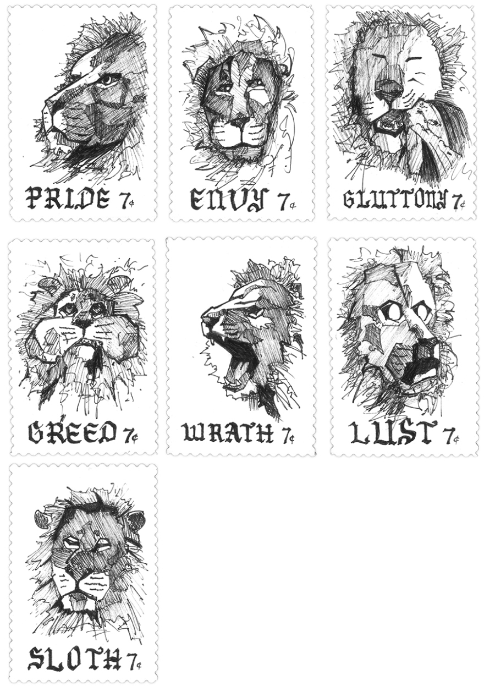ALBUM COVER
"Create an album cover for a fictitious band, using a fictitious album name and an image from Flickr"
In computer science, JSmooth is a wrapper that compiles a .jar file into a .exe file, which makes a java file executable, as if making something alive.
After compositing the cover digitally, I mount the print onto a piece of chipboard to give it some rigidity and weight, so it feels like a real album in hand.
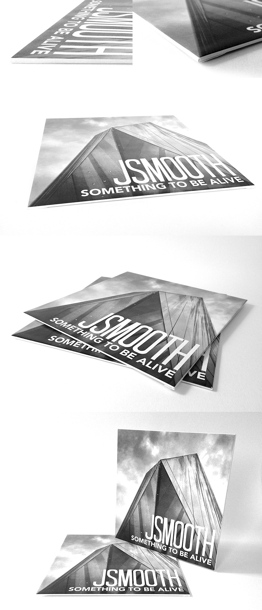POSTER FOR DESIGN LECTURE
"Design a poster for an exhibition and mimic the style of the designers in the design"
My assigned designer is Raymond Loewy, whose influential work includes the PRR S1 Locomotive, the Lucky Strike Cigarette packaging, the Coca Cola bottle, the Shell logo and the Nabisco logo.
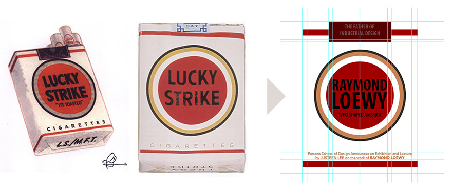I reflect the design of the Lucky Strike packaging on the poster, for both Loewy's iconic design and its brand popularity in the U.S..
ONOMATOPOEIA
"The naming of a thing or action by a vocal imitation of the sound associated with it"
TITLE PAGES
"Design a title page for the following books:
Lolita, Naked Lunch & Frankenstein"
Sex, drugs & horror through typography
Lolita, Naked Lunch and Frankenstein are classic novels about sex, drugs and horror respectively. Thus, I attempt to design the titles pages to convey those themes solely through typography.
FOUND ALPHABET MINATURE ACCORDION
"The urban environment is full of hidden letterforms waiting to be discovered"
I take all photos in a store in NYC called ABC Carpet & Home, which grants all letters a cohesive theme of furniture and home products.
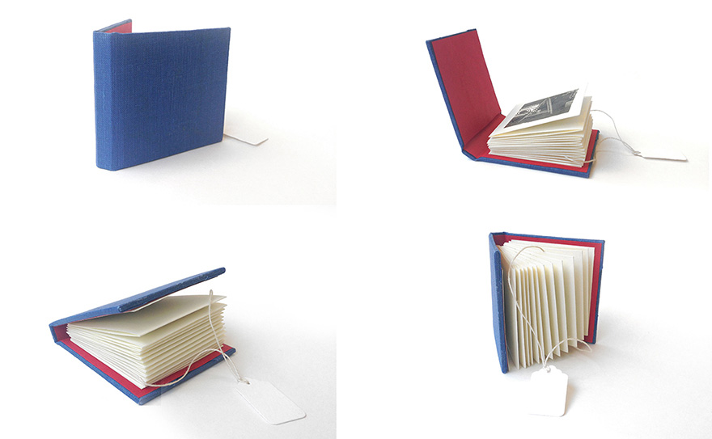Children's Book
"A marriage of typography and art
Redesign the book jacket of a children's book"
Unlike the original one (on the left below), I reposition the present and harness the characters' sight line to build up curiosity.
The overhung ribbon bookmark also adds another fun element and attracts to children and parents by engaging them to pull it out.
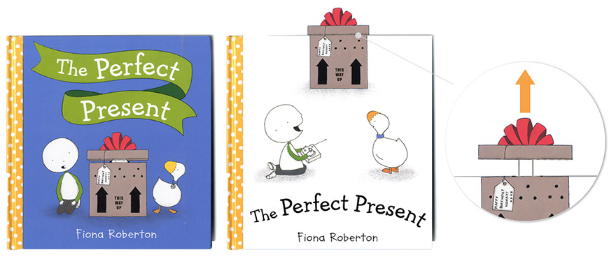GIG POSTER
"A tradition of art posters for indie bands.
Design one for a gig in NYC this summer, June 20"
Based in San Francisco, THE SHE'S, is a four-girl indie band known for their youthful, energetic, postitive and lively music. I choose this band because one of the members is a good friend of mine from high school.
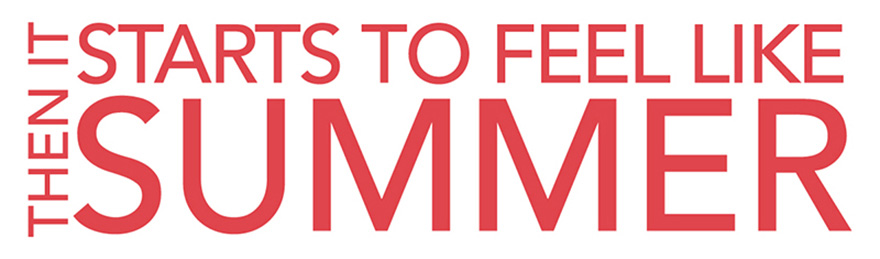This lock-up is the title of one of their albums, and I emphasize the red color and "SUMMER" since I create this in early June.
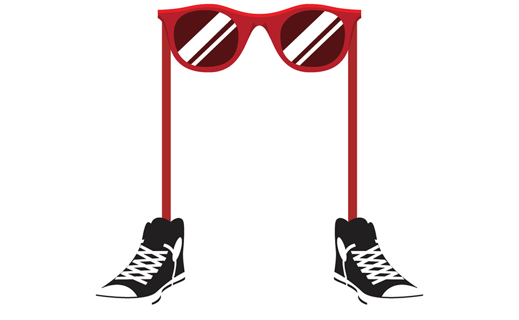The "sunglasses character" expresses the young and energetic image of the band, and also highlights their sunglasses and Converse high-top shoes outfit in some of their music videos.
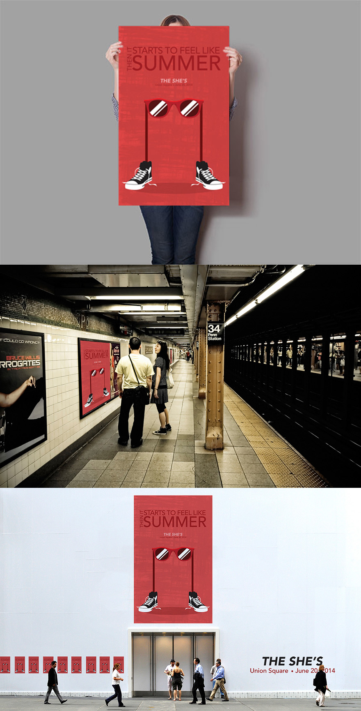Branding
"Design a brand with a table tent, shopping bag, business card and another application"
During hours of exploration, I experiment with about 237 ideas for the logo emphasizing the letter "K".
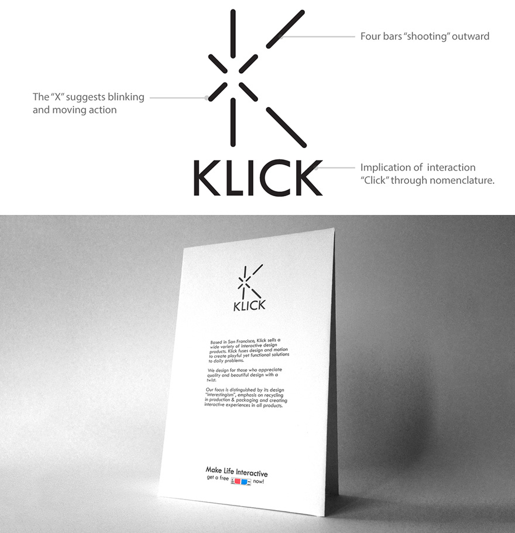The 3D glasses element at the bottom of the table tent takes a shift from the paragraphic text and leads you to the business card.
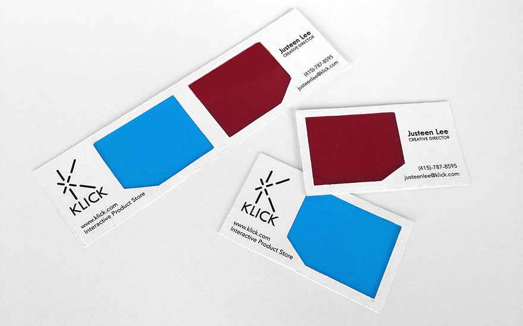I combine the conventional business card with 3D glasses. In addition to the layful experience, customers are more likely take two business cards since they come in pairs.
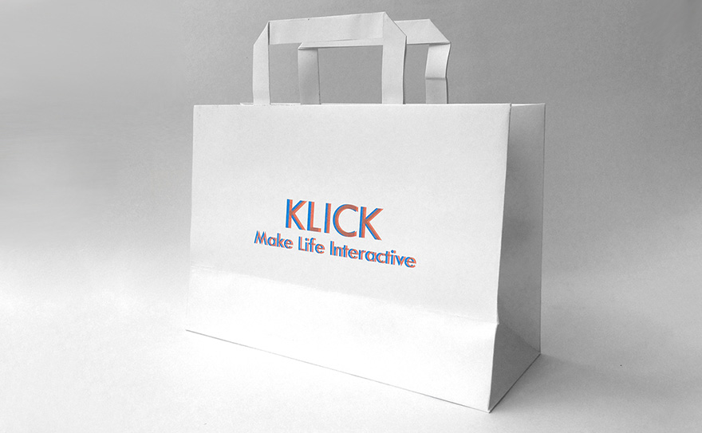With 3D glasses, customers can see a 3D logo on the shopping bag.
To show exlusivity of the VIPs, each membership card comes with a sleeve. When a VIP cardholder pulls the card out of the sleeve, he/she will see a "blinking" logo as shown above.

Book Design
"Design a book about getting lost in New York City"
I am intrigued by the fancy lights and billboards in Times Square, so I decide to bring that exciting experience through reading the book.
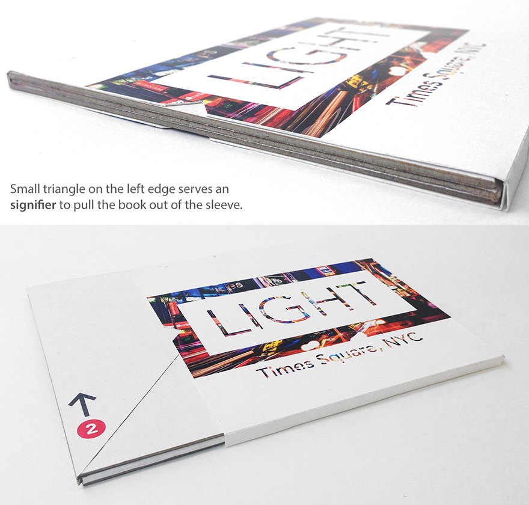Resembling the NYC subway signs, the arrrows and color-coded numbers help guide readers how to read the book.
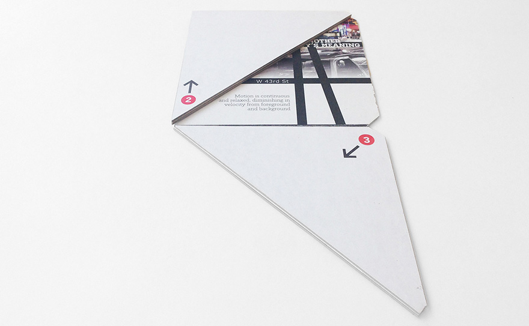The experience begins at the bottom of the book, the W 40th Street.
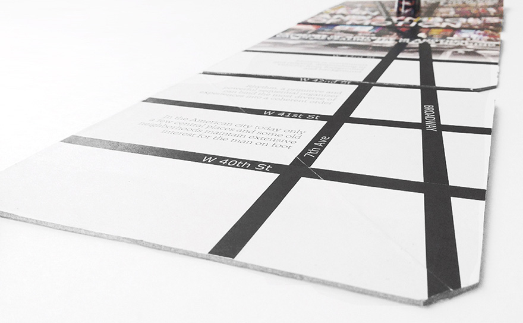At the beginning of Broadway, everything is not yet crazy. The bottom of the book reflects this quiet atmosphere in monochromatic tone.
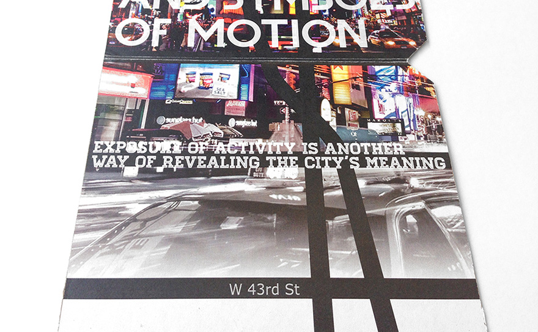The closer to Times Sqaure, the more lights and signs begin to emerge, indicated by the gradient transition on 43rd Street.
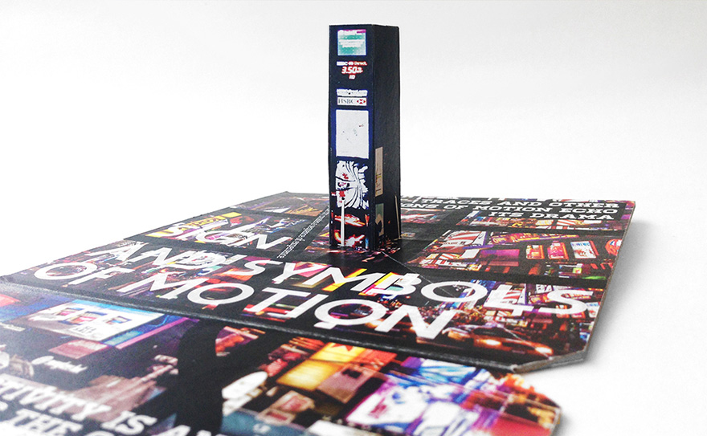The vibe intensifies as you arrive Times Square, the center of excitement, surrounded by continuous and blasting billboards and advertisements with hundreds of tourists from all over the world.
 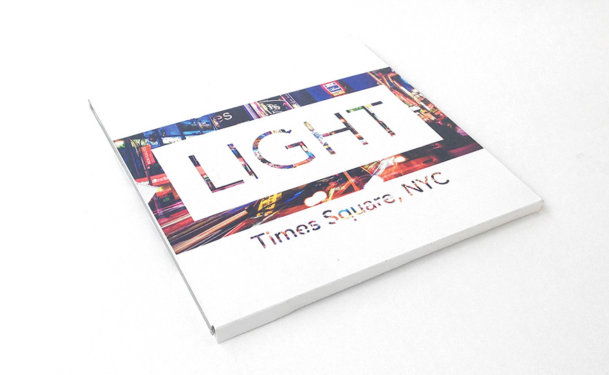
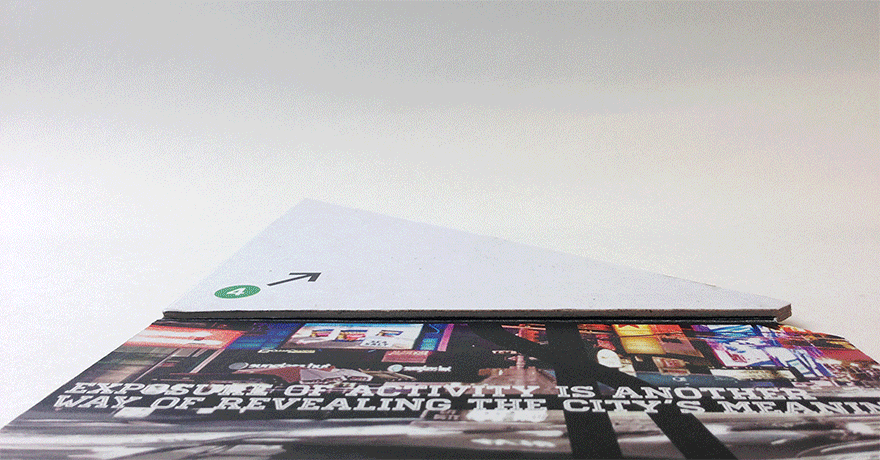
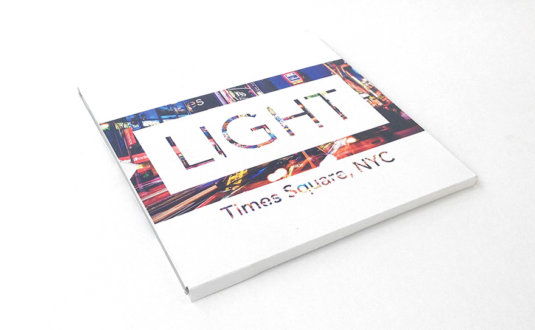
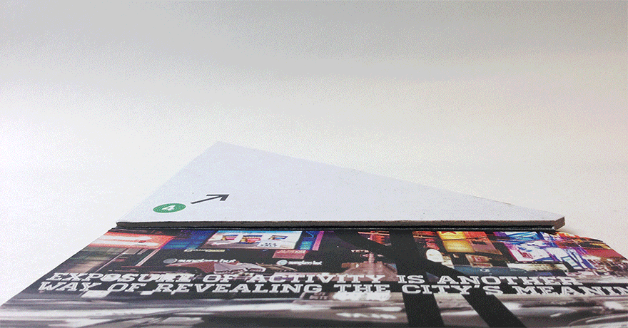